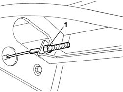
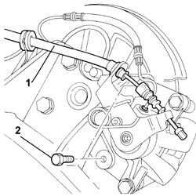
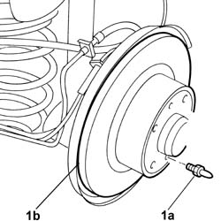

3310B48 REAR BRAKE DISC - R R
- Path
- Procedures > 33 BRAKES > 3310 DISC BRAKES > 3310B REAR DISC BRAKES > 3310B48 REAR BRAKE DISC - R R
- Kind
- repair procedure (removal / refitting; the operation number is the code)
- Applies to
- all engines; all production periods
- Interactive page
- https://sloeber94.github.io/elrnDB-fUlss/en/#/179007291
Applies to: all engines; all production periods
 Removing
Removing
 Refitting
RefittingPosition the vehicle on a lift.
Op. 4450B11 TYRE INFLATION VALVE CAP - REPLACE
1. Loosen the handbrake adjustment screw.

Applies to: all engines; all production periods
1. Disconnect the handbrake cable from the mounting on the rear caliper.
2. Undo the rear brake caliper mounting fixing bolts.

Applies to: all engines; all production periods
Move the brake caliper complete with rear brake bracket aside.
1. Undo the brake disc fastening pins (1a) and remove the brake discs (1b).

Applies to: all engines; all production periods
Refitting
Removing- Position the rear brake disc, screw in the fastening pin and tighten to the recommended torque.
Value da Nm | Fastening | Component | Ø | |
|---|---|---|---|---|
- | 1.5 | bolts | [REAR BRAKE CALIPERS - R&R - INCLUDES HANDBRAKE ADJUSTMENT] | - |
Position the brake caliper complete with support and tighten the bolts fixing the caliper support to the rear stub axle to torque.
- Apply a locking compound to the caliper bolts.
- Tighten the nuts securing the rear caliper to the bracket and tighten to the specified torque.
Value da Nm | Fastening | Component | Ø | |
|---|---|---|---|---|
- | 9.5 | bolts | [REAR BRAKE CALIPERS - R&R - INCLUDES HANDBRAKE ADJUSTMENT] | - |
Secure the handbrake cable to the brake caliper.
Op. 3380A04 HANDBRAKE - CHECK TRAVEL
Op. 4450B11 TYRE INFLATION VALVE CAP - REPLACE
Remove the vehicle from the lift.
Test the operation of the braking system.